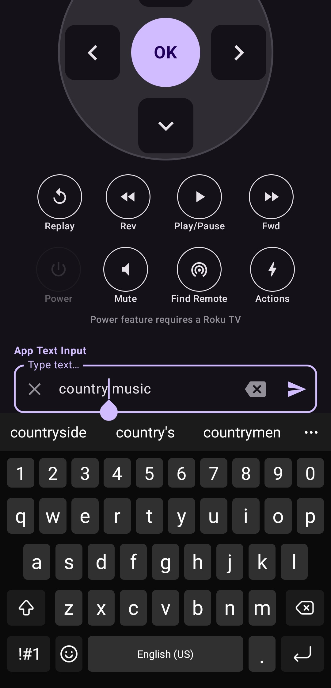

How to Type Faster on Roku: The Secret to Intelligent Keyboard Sync
Typing a movie title or a long email address using a physical Roku remote and an on-screen alphabet is a slow, frustrating process. "Clicking left, left, up, select" for every single letter belongs in the past. Discover how Intelligent Keyboard Sync transforms the way you interact with your Roku TV.
The Problem with Traditional Roku Typing
Anyone who has tried to search for a movie title or enter a password on their Roku TV knows the pain. Using the arrow buttons on a physical remote to navigate an on-screen keyboard is incredibly tedious and time-consuming. Each character requires multiple button presses, turning a simple task into a frustrating ordeal.
Whether you're logging into Netflix, searching YouTube, or entering an email address for a subscription service, traditional Roku typing methods slow down your streaming experience and waste valuable time.
Introducing Intelligent Keyboard Sync
The Roku TV Remote Control app introduces Intelligent Keyboard Sync—a game-changing feature that allows you to use your smartphone's native keyboard to input text directly onto your TV. Simply type on your phone, and your text appears instantly on your Roku TV screen.
This feature bridges the gap between your phone and TV, allowing seamless text input without the need for additional hardware or complicated setup. It's the productivity hack every Roku user should know about.
Key Benefits of Keyboard Sync
⚡ Speed: Type as Fast as You Text
With Intelligent Keyboard Sync, you can type as quickly as you normally would on your phone. What used to take 30 seconds of remote button pressing now takes just 3 seconds. Your fingers are already trained to use your phone's keyboard—why not use that to your advantage?
✓ Accuracy: No More Mistakes
No more clicking the wrong letter and having to backspace through the entire on-screen keyboard. Your phone's autocorrect and predictive text features work seamlessly with Intelligent Keyboard Sync, helping you get the right letters the first time.
📋 Copy & Paste: Instantly Share Content
Need to enter a long password or URL? Simply copy it from your phone and paste it directly into your Roku TV. This eliminates the need to manually type complex strings of characters, saving you time and frustration.
Real-World Use Cases
Netflix Login
Instead of clicking through 20+ characters for your email and password using your remote, use Intelligent Keyboard Sync to enter both in seconds. Your Netflix experience starts faster.
YouTube Search
Searching for a specific video? Type the title or artist name on your phone and instantly search on your TV. No more hunting through on-screen keyboards.
App Subscriptions
Signing up for a new streaming service? Enter your email and payment information quickly and accurately without the pain of traditional Roku typing.
Smart TV Settings
Entering WiFi passwords or connecting to smart home devices? Use your phone's keyboard for instant, error-free input.
How to Use Intelligent Keyboard Sync
- Open the Roku TV Remote Control app on your Android phone
- Ensure your phone and Roku TV are connected to the same WiFi network
- Navigate to a text input field on your Roku TV using the app
- The keyboard interface appears on your phone automatically
- Type normally on your phone—text syncs to your TV in real-time
- Use autocorrect and predictive text features to speed up input
- Press Enter on your phone to confirm and submit

Why This is the Ultimate Roku Productivity Hack
Intelligent Keyboard Sync isn't just about speed—it's about reclaiming your time and enjoying a better Roku experience. Whether you're a casual streamer or a power user, this feature eliminates one of the biggest pain points of owning a Roku TV.
By leveraging technology you already have (your smartphone), Roku TV Remote Control makes your TV interaction smoother, faster, and more enjoyable. No special hardware required. No complicated setup. Just pure productivity.
Get Started Today
If you haven't already, download the Roku TV Remote Control app today and discover the power of Intelligent Keyboard Sync. Your fingers and your sanity will thank you.